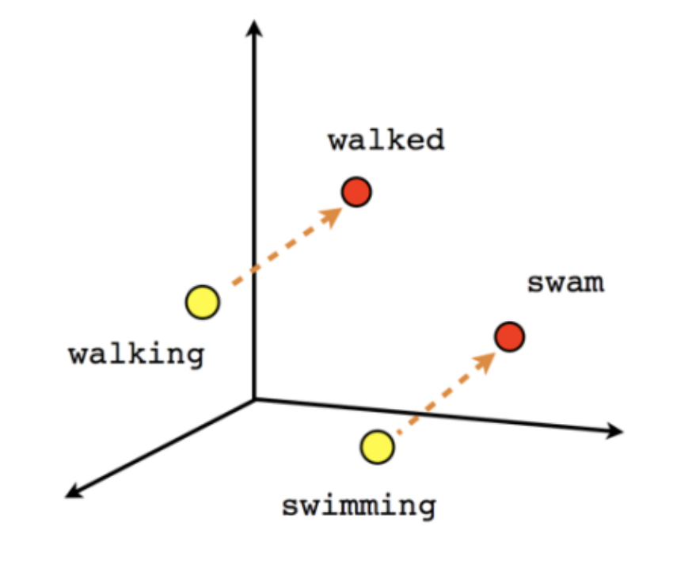
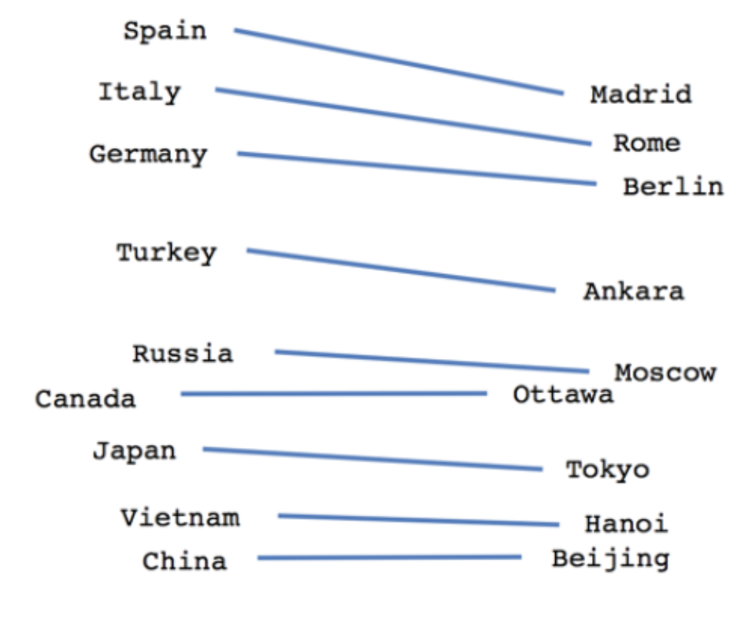

class: center, middle, first-slide background-image: url(img/dl.jpeg) --- class: center, middle # Practical Deep Learning --- # Agenda 1. Why Use Deep Learning? 1. History 1. In Your Life 1. In Art 1. In the Future 1. Learning 1. FA Use Case 1. Interactive Demo --- class: center, middle # Why Use Deep Learning? --- class: center, middle  [source](https://whatsthebigdata.com/2017/01/12/deep-learning-at-google/) --- # History * first developed in the 1950's * a class of algorithms --- # Basics <video width="800" height="500" controls> <source src="img/linear.mkv"> </video> --- # In Your Life -- * Cell phone text prediction -- * Netflix movie suggestions, Spotify music suggestions -- * Google/Facebook face recognition -- * Email spam detection -- * Siri/Alexa --- # In Art --  [source](https://hackernoon.com/non-artistic-style-transfer-or-how-to-draw-kanye-using-captain-picards-face-c4a50256b814) ---  [source](https://no2147483647.wordpress.com/2015/12/) ---  [source](https://github.com/albertpumarola/GANimation) --- # In the Future --  --- # Learning * [fastai](fast.ai) --- # FA Use Cases -- * drive more donations -- * predict user sentiment --- # Interactive Demo * https://fa-fundraising-pr-990.herokuapp.com/ --- # word2vec -- * "Word vectors, also called word embeddings, represent words in a way that: (1) encodes their meaning and (2) allows us to calculate a similarity score for any pair of words. The similarity score is simply a fractional value between -1.0 and 1.0, with higher values corresponding to higher similarity." - _The Inner Workings of word2vec_ --- ## verb tenses  [source](https://www.tensorflow.org/images/linear-relationships.png) --- ## relationships  -- * since all words are associated in a vector space, we can add and subtract the vectors to form associations -- * Italy - Spain + Rome = Madrid --- ## TODO * use ngrams * normalize the input corpus * automate the vecorization process